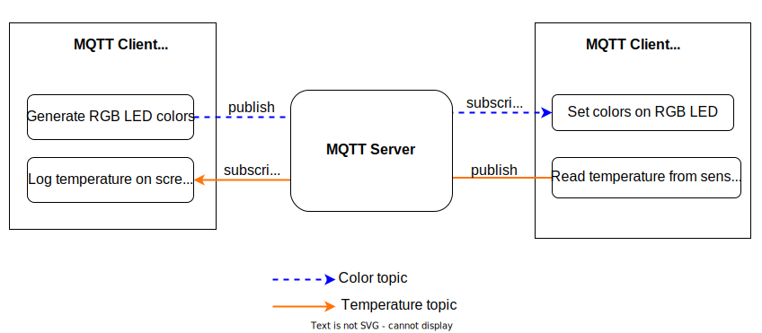

MQTT 练习：发送消息
配置
✅ 进入 intro/mqtt/exercise 目录。
✅ 打开 intro/mqtt/exercise 中准备好的项目框架。
✅ intro/mqtt/host_client 中有一个在主机上运行的程序，它可以模拟第二个客户端。用 cargo run 在单独的终端中运行它。下面是有关主机客户端的更多信息。
这个客户端也会生成随机的 RGB 颜色，并把它们发布到一个主题下。 这只与练习的第二部分相关。
⚠️ 与 HTTP 练习类似，你需要在 cfg.toml 中为两个程序配置连接凭证。除了 Wi-Fi 凭证，还需要添加 MQTT 服务器的信息。查看 cfg.toml.example 来了解需要的设置。请记住 cfg.toml 文件中括号里的名称就是 Cargo.toml 中的包名。
练习的结构如下图所示。在这一部分中，我们将重点关注温度主题。

intro/mqtt/exercise/solution/solution_publ.rs 包含解答。你可以用下面的命令运行它：
cargo run --example solution_publ
任务
✅ 用默认配置和空的处理程序（handler）闭包创建一个 EspMqttClient。
✅ 在 hello_topic 主题下，给消息代理发送一个空的消息。 使用 hello_topic(uuid) 函数生成适当范围的主题。
✅ 将一个客户端连接上消息代理，让它输出收到的消息，以此来验证是否发布成功。host_client 已经实现了这个操作。在 ESP Rust 开发板上运行程序之前，在另一个终端里启动 host_client。
host_client 应当输出类似这样的信息：
Setting new color: rgb(1,196,156)
Setting new color: rgb(182,190,128)
Board says hi!
✅ 在主函数末尾的循环里，在 temperature_data_topic(uuid) 主题下每秒发布板子的温度。用 host_client 来进行验证：
Setting new color: rgb(218,157,124)
Board temperature: 33.29°C
Setting new color: rgb(45,88,22)
Board temperature: 33.32°C
建立连接
连接由 esp_idf_svc::mqtt::client::EspMqttClient 实例管理。
使用以下内容构造它：
- 消息代理的 URL，如果需要的话，还包含连接凭据
esp_idf_svc::mqtt::client::MqttClientConfiguration类型的配置信息- 与 HTTP 服务器练习类似的处理程序闭包
#![allow(unused)] fn main() { let mut client = EspMqttClient::new(broker_url, &mqtt_config, move |message_event| { // ... 你的处理程序代码，暂时留空 // 我们会在本章的后面添加功能 })?; }
相关工具 & crates
为了记录板子发送的传感器值，intro/mqtt/host_client 下提供了一个辅助客户端，它会订阅温度主题。
mqtt_messages crate（在 common/lib）支持处理消息、订阅和主题：
用于生成主题字符串的函数
color_topic(uuid)- 创建一个用于给板子发送颜色的主题。
hello_topic(uuid)- 用于初步验证连接成功的主题temperature_data_topic(uuid)- 创建完整的温度主题字符串
编码和解码消息 payload
板子的温度 f32 用 temp.to_be_bytes() 转换成“大端序”的 4 个字节。
#![allow(unused)] fn main() { // 温度 let temperature_data = &temp.to_be_bytes() as &[u8]; // 板子上 let decoded_temperature = f32::from_be_bytes(temperature_data); // 电脑上 }
发布 & 订阅
EspMqttClient 也负责在指定主题下发布消息。
发布函数 publish 包含一个 retain 参数，指示此消息是否需要发送给在发布之后才连接上的客户端。
#![allow(unused)] fn main() { let publish_topic = /* ... */; let payload: &[u8] = /* ... */ ; client.publish(publish_topic, QoS::AtLeastOnce, false, payload)?; }
Troubleshooting
- 构建示例客户端时出现
error: expected expression, found .：将你的 stable Rust 更新到 1.58 或更新的版本 - 没有显示 MQTT 消息？确保所有客户端（板子和电脑）使用的是相同的 UUID（你可以在日志输出中看见它）
- 确保
cfg.toml文件被正确配置。example-client在程序的开始处有一个dbg!()输出，显示mqtt配置。它应当会输出你的cfg.toml文件内容。 - 运行主机客户端时出现
error: expected expression, found .：用rustup update就可以解决